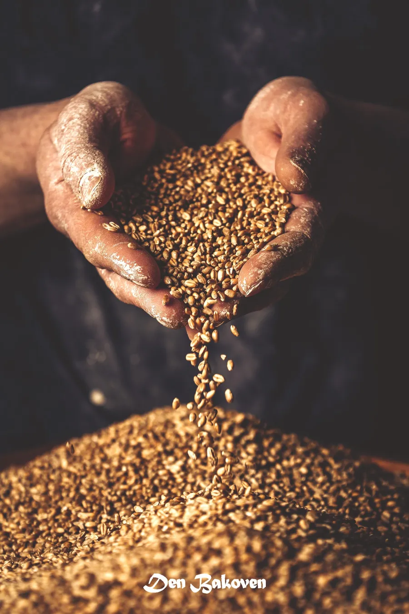
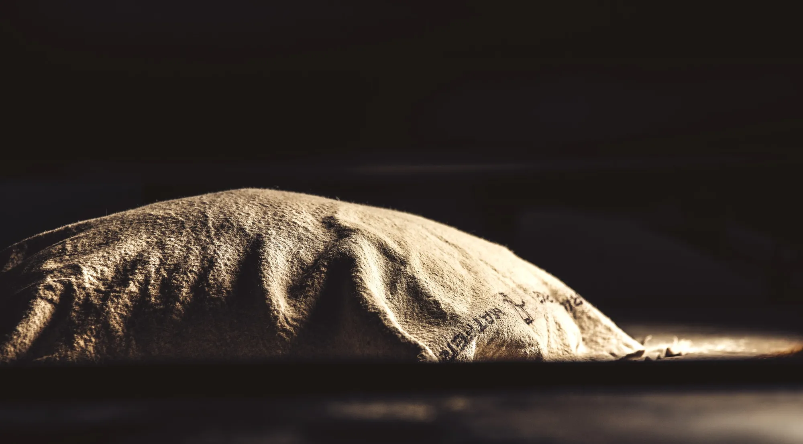
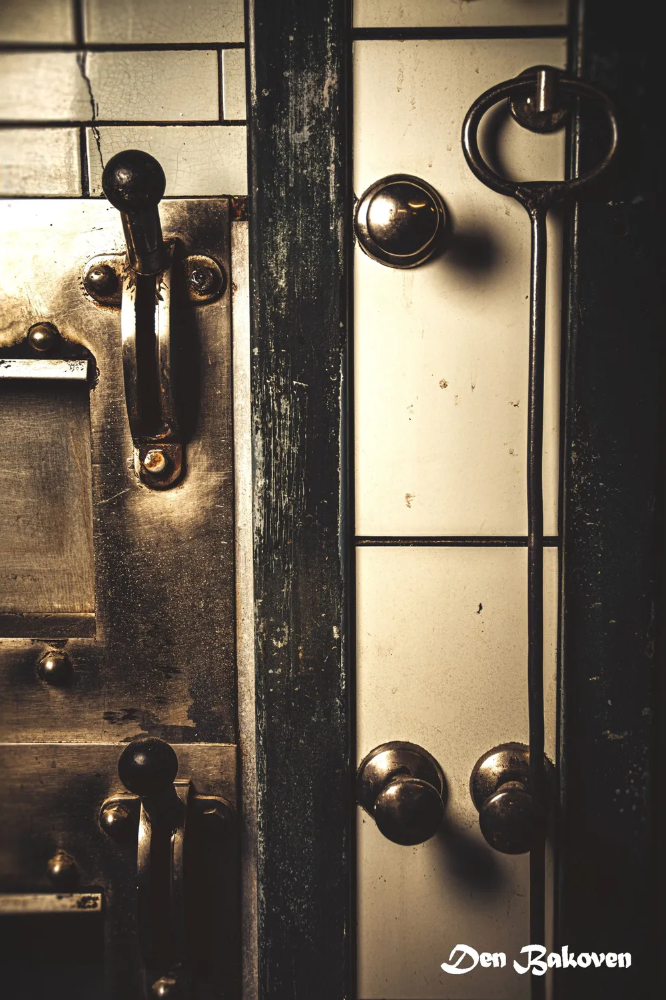
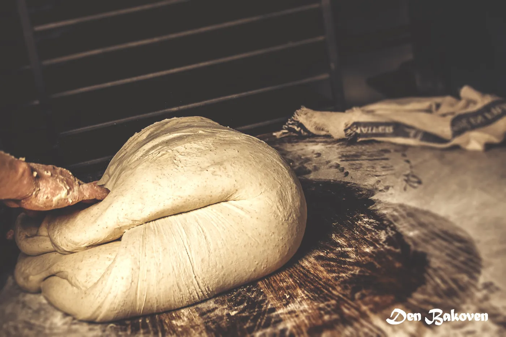
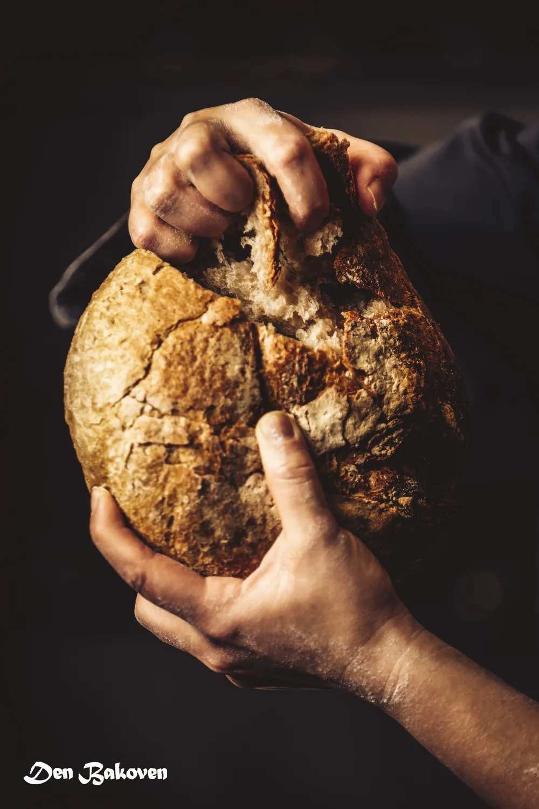
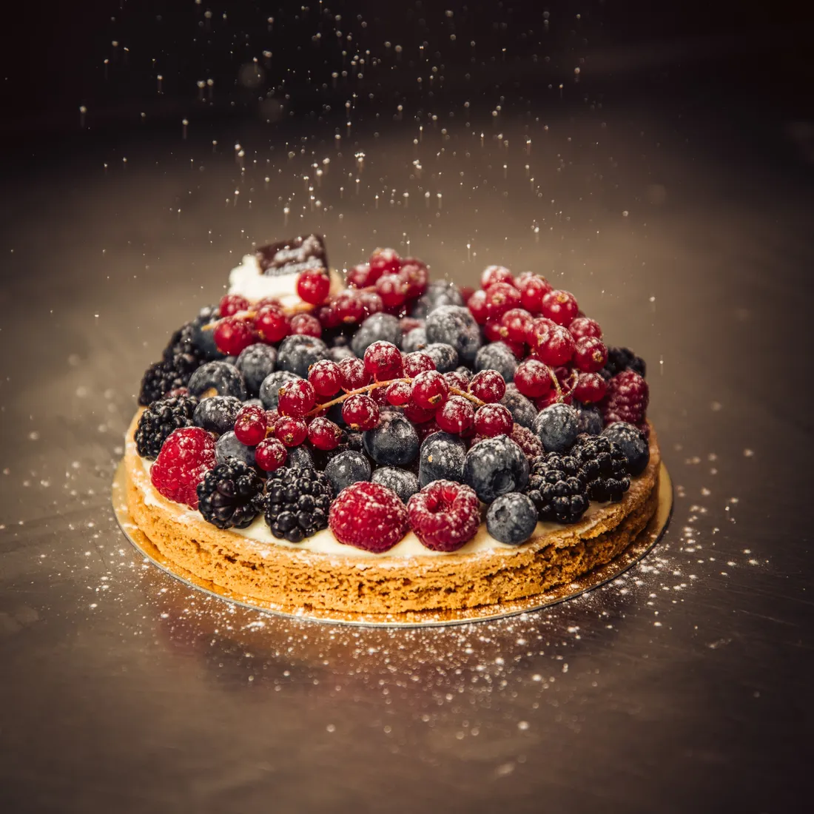
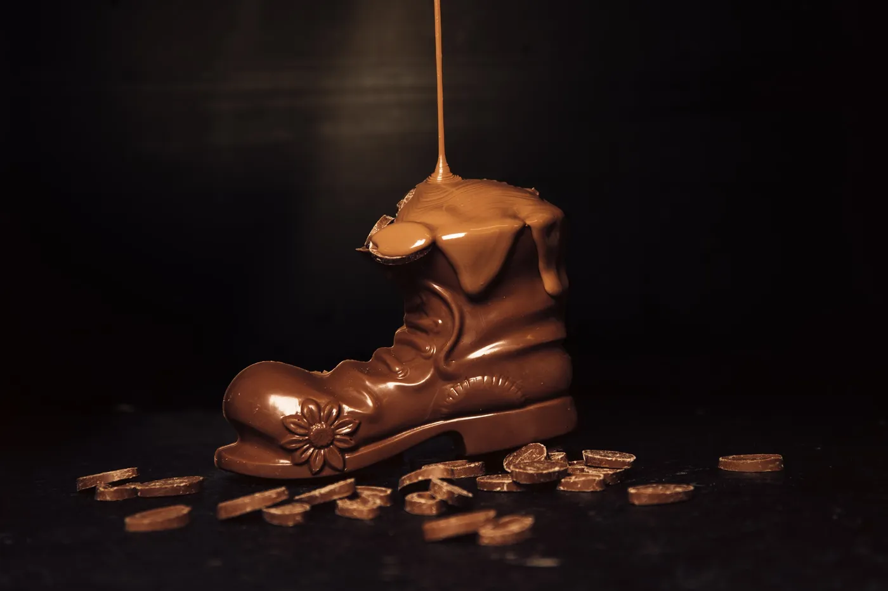
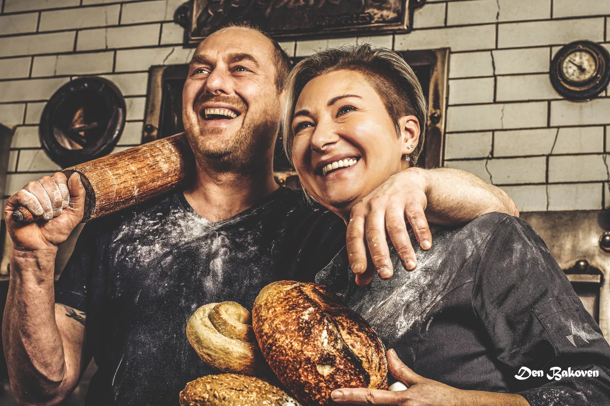
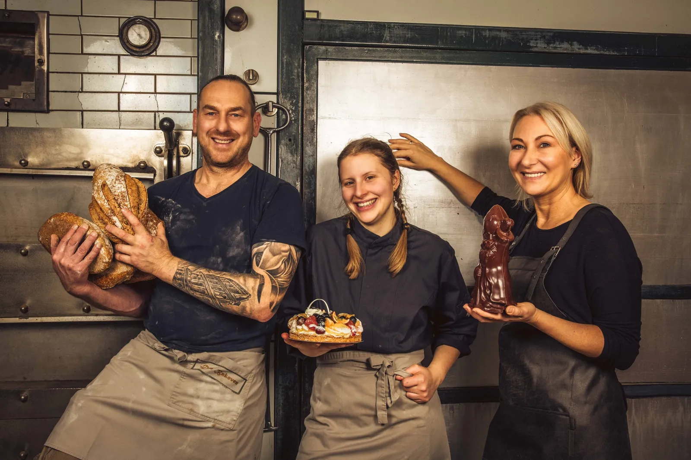
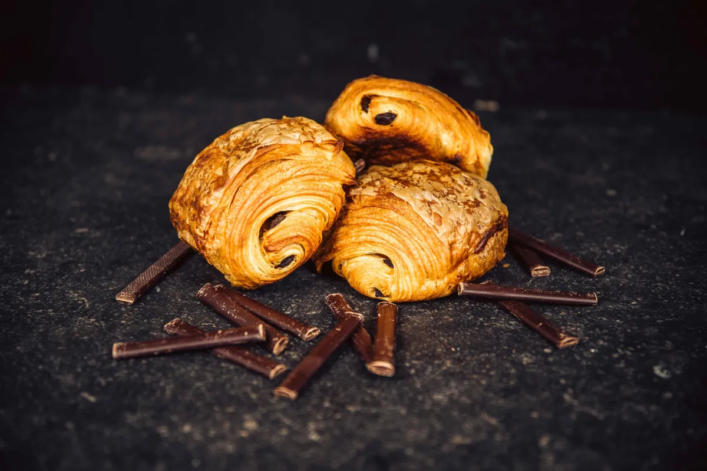

Zelf gemalen
De hele korrel, dus ook alle vezels en voedingsstoffen.

We malen ons graan zelf en bakken in een oven die al sinds de jaren zestig brood bakt. Zonder kant-en-klare mixen.

De oude Depasse-oven werd gerenoveerd toen we Den Bakoven begonnen. Er wordt nog altijd volop in gebakken, en de geur van vers brood hangt er elke bakdag.

De hele korrel, dus ook alle vezels en voedingsstoffen.

Voor onze speciale broden, zonder meelverbeteraars.
Van de appels stoven tot de chocomousse en het drooggebak: alles gebeurt hier, van A tot Z.



Onze bruine en witte bolster bestaan ook in een afbakversie. Vijf dagen houdbaar in de koelkast, tien minuutjes in een oven van 220 graden en je hebt een knapperige korst.
Het begon met een houtoven en een fiets. Vandaag staan Wim en Christel in het pand van de vroegere ‘roze bakker’.

Alfons Rubbens bakt zijn eerste broden van plaatselijk meel en brengt ze per fiets rond.
Ferdinand bakt met zijn gezin brood en taarten in bakkerij Rubbens-Lemmens.
Een elektrische molen, voor gezonder natuurbrood.
Dochter Ingrid wordt beloond voor haar werk aan het hoofd van bakkerij Rubbens.
Wim en Christel kopen de oude bakkerij, zetten er opnieuw een graanmolen en noemen ze naar de steenoven.
Het hele productieproces in eigen handen.
De Diestsesteenweg is weer open in twee richtingen, met een ventweg tot onze parking.

Ben je lid van een vereniging? Dan geven we graag een rondleiding in de bakkerij en vertellen we waar we voor staan.
Ambacht vraagt voorbereiding. Daarom bakken we een paar dagen per week, en dan goed.

Ik maakte deze demo voor jullie om te tonen wat er kan. Na een kort gesprek maak ik er iets veel persoonlijkers van, helemaal naar jullie wens.
Vrijblijvend. Ik kom langs of we bellen.
Op maat, op jullie eigen domein.
Geen voorschot. Jullie betalen pas als alles klaar is.
Hosting, domeinnaam en kleine wijzigingen, zoals nieuwe openingsuren.
Omdat een voorbeeld meer zegt dan een mail. Zo zien jullie meteen wat er kan, en het kost jullie niets.
Nee. Het gesprek is vrijblijvend. Vinden jullie het niks, dan is het daarmee gedaan.
Na ons gesprek staat jullie site binnen 10 tot 14 dagen online.
Zeker. Jullie domeinnaam kan gewoon blijven, de nieuwe site komt in de plaats van de oude.
Nee, dat doe ik op basis van ons gesprek. Eigen foto's zijn mooi meegenomen, maar niet nodig om te starten.